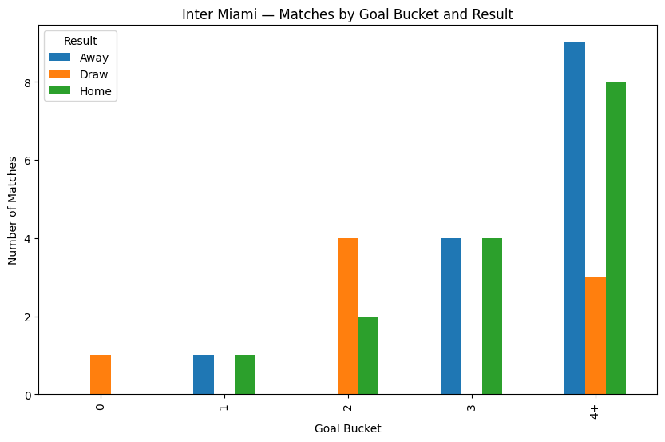

Overview
Data exploration and analysis of the 2024 Major League Soccer season. The 2024 MLS season provided an excellent opportunity to explore team performance, player statistics, and match outcomes. This project aimed to collect, clean, and analyze data to uncover actionable insights about the league.
Methodology
- Data Collection & Preparation: Gathered official MLS data
using Python tools such as
requests(HTTP requests),BeautifulSoup(HTML parsing), andglob(batch file handling), loading everything intopandasDataFrames. - Data Cleaning: Addressed missing values, standardized data formats, and validated datasets to ensure accuracy.
- Exploratory Analysis: Used statistical summaries and visualizations to identify key patterns.
- Visualization: Created interactive dashboards to communicate findings effectively.
Libraries Used
import pandas as pd
import numpy as np
import glob
import seaborn as sns
import plotly.express as px
import matplotlib.pyplot as plt
plt.style.use('default')
import warnings
from tabulate import tabulate
warnings.filterwarnings('ignore')1. Data Collection
To gather the necessary data, we utilized web-scraping techniques. The pandas
library's read_html function was employed to extract structured data directly
from the MLS website. By specifying the id attribute of the desired table
(sched_all), we ensured precise extraction of the relevant dataset.
| Wk | Day | Date | Time | Home | xG | Score | xG (Away) | Away | Attendance | Venue | Match Report |
|---|---|---|---|---|---|---|---|---|---|---|---|
| 1 | Wed | 2024-02-21 | 20:00 | Inter Miami | 1.4 | 2–0 | 0.8 | Real Salt Lake | 21 137 | Chase Stadium | Match Report |
| 1 | Sat | 2024-02-24 | 13:45 | LAFC | 1.5 | 2–1 | 1.8 | Seattle Sounders | 22 214 | BMO Stadium | Match Report |
| 1 | Sat | 2024-02-24 | 14:00 | Columbus Crew | 1.8 | 1–0 | 0.5 | Atlanta Utd | 20 406 | Lower.com Field | Match Report |
| 1 | Sun | 2024-02-25 | 14:30 | FC Cincinnati | 0.9 | 0–0 | 0.5 | Toronto FC | 25 513 | TQL Stadium | Match Report |
| 1 | Sun | 2024-02-25 | 16:00 | Nashville SC | 0.1 | 0–0 | 1.4 | NY Red Bulls | 30 109 | Geodis Park | Match Report |
| 1 | Sat | 2024-02-24 | 19:30 | Austin | 1.1 | 1–2 | 3.0 | Minnesota Utd | 20 738 | Q2 Stadium | Match Report |
| 1 | Sat | 2024-02-24 | 19:30 | Orlando City | 0.9 | 0–0 | 1.0 | CF Montréal | 24 249 | Inter&Co Stadium | Match Report |
| 1 | Sat | 2024-02-24 | 19:30 | Portland Timbers | 0.5 | 4–1 | 1.2 | Colorado Rapids | 21 411 | Providence Park | Match Report |
| 1 | Sat | 2024-02-24 | 19:30 | Houston Dynamo | 1.0 | 1–1 | 0.2 | Sporting KC | 18 818 | Shell Energy Stadium | Match Report |
| 1 | Sat | 2024-02-24 | 19:30 | Philadelphia Union | 2.1 | 2–2 | 1.6 | Chicago Fire | 18 734 | Subaru Park | Match Report |
2. Data Cleaning
All values in the Date column were converted to a standard datetime format using
pd.to_datetime() with errors='coerce'. Invalid or improperly formatted
dates are replaced with NaT (Not a Time), preventing errors during conversion.
| Index | Round | Wk | Day | Date | Time | Home | xG | Score | xG (Away) | Away | Attendance | Venue |
|---|---|---|---|---|---|---|---|---|---|---|---|---|
| 15 | — all NaN — | |||||||||||
| 30 | — all NaN — | |||||||||||
| 44 | — all NaN — | |||||||||||
| 59 | — all NaN — | |||||||||||
| 73 | — all NaN — | |||||||||||
| 88 | — all NaN — | |||||||||||
| 103 | — all NaN — | |||||||||||
| 118 | — all NaN — | |||||||||||
| 133 | — all NaN — | |||||||||||
| 148 | — all NaN — | |||||||||||
To ensure the dataset contained only valid match rows, we applied two focused filters.
MLS = MLS[MLS["Date"].notna()] removes blank separator rows that FBref inserts between rounds.
MLS = MLS[MLS["Date"] != "Date"] drops repeated header rows. After these steps, the DataFrame
contains only genuine match records.
3. Exploratory Analysis: Messi Economic Impact
The table below lists a sample of MLS matches with core fields: week/day/date/time, home and away teams, each side's xG, the final score, attendance, and venue. We also derived Home Goals, Away Goals, Total Match Goals, and a Goal Bucket label.
| Wk | Day | Date | Time | Home | xG | Score | xG (Away) | Away | Attendance | Venue | Match Report | Home Goals | Away Goals | Total Goals | Goal Bucket | 0 Goals | 1 Goal | 2 Goals | 3 Goals | 4+ Goals |
|---|---|---|---|---|---|---|---|---|---|---|---|---|---|---|---|---|---|---|---|---|
| 1 | Wed | 2024-02-21 | 20:00 | Inter Miami | 1.4 | 2–0 | 0.8 | Real Salt Lake | 21 137 | Chase Stadium | Match Report | 2 | 0 | 2 | 2 | 0 | 0 | 1 | 0 | 0 |
| 1 | Sat | 2024-02-24 | 13:45 | LAFC | 1.5 | 2–1 | 1.8 | Seattle Sounders | 22 214 | BMO Stadium | Match Report | 2 | 1 | 3 | 3 | 0 | 0 | 0 | 1 | 0 |
| 1 | Sat | 2024-02-24 | 14:00 | Columbus Crew | 1.8 | 1–0 | 0.5 | Atlanta Utd | 20 406 | Lower.com Field | Match Report | 1 | 0 | 1 | 1 | 0 | 1 | 0 | 0 | 0 |
| 1 | Sun | 2024-02-25 | 14:30 | FC Cincinnati | 0.9 | 0–0 | 0.5 | Toronto FC | 25 513 | TQL Stadium | Match Report | 0 | 0 | 0 | 0 | 1 | 0 | 0 | 0 | 0 |
| 1 | Sun | 2024-02-25 | 16:00 | Nashville SC | 0.1 | 0–0 | 1.4 | NY Red Bulls | 30 109 | Geodis Park | Match Report | 0 | 0 | 0 | 0 | 1 | 0 | 0 | 0 | 0 |
To compute this KPI, we classify each match by total goals, clean bad records, and aggregate by outcome to see how scoring intensity distributes across results.
- Bucket: Turn the raw
Scoreinto a Goal Bucket (0, 1, 2, 3, or 4+) for every match. - Clean: Filter out rows where parsing failed (wrong dash, missing, or non-numeric values).
- Group: Aggregate by Outcome (Home / Draw / Away), summing each goal bucket and counting Total Matches.
- Read: Quickly see scoring distribution by result and convert to percentages to support pricing, marketing, and scheduling decisions.
| Outcome | 0 Goals | 1 Goal | 2 Goals | 3 Goals | 4+ Goals | Total Matches |
|---|---|---|---|---|---|---|
| Away | 0 | 29 | 16 | 54 | 59 | 158 |
| Draw | 30 | 0 | 46 | 0 | 44 | 120 |
| Home | 0 | 33 | 40 | 68 | 94 | 235 |
| Total | 30 | 62 | 102 | 122 | 197 | 513 |
We filtered all matches where Inter Miami played (home or away). For each game, we calculated the team's goals scored, then grouped by Outcome and Goal Bucket. The bar chart below shows whether wins cluster in 2–3 or 4+ goal games and how the pattern shifts home vs. away, quantifying a possible "Messi effect".

What I found